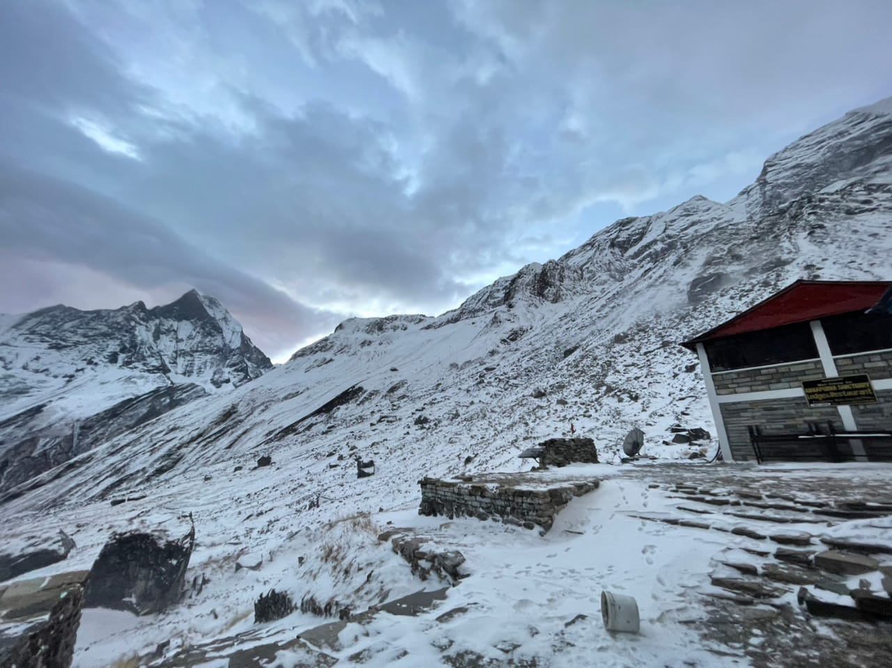

Annapurna Base Camp Luxury Trek
Experience the awe-inspiring 360-degree mountain amphitheater of the Annapurna Sanctuary (4,130m) with upgraded comfort, personalized Sherpa guidance, and organized private transfers. Over 15 thoughtfully paced days, journey from Kathmandu's heritage landmarks to Pokhara's tranquil lakeside, through the traditional Gurung village of Ghandruk and into the high Sanctuary beneath towering giants like Annapurna South and Machhapuchhre (Fishtail).




Key Trip Facts: Annapurna Base Camp Luxury Trek
Annapurna Base Camp Luxury Trek: Comprehensive Journey Overview
The Annapurna Base Camp Luxury Trek offers a refined, deeply comfortable way to experience the untamed natural beauty, traditional villages, and towering Himalayan mountain scenery of Nepal while enjoying upgraded accommodation and personalized travel services. Designed specifically for travelers who seek the majestic rewards of Himalayan trekking without sacrificing comfort wherever suitable facilities exist, this 15-day journey combines premium city hotels, carefully selected mountain lodges, guided walking routes, authentic cultural encounters, and seamless private transportation through the Annapurna foothills.
Over the proposed 15 days, the journey takes you from Kathmandu to Pokhara, ascending through the Gurung stronghold of Ghandruk and deep into the sacred Annapurna Sanctuary. The walking route continues through Chhomrong, Bamboo, Dovan, Himalaya, Deurali, and Machhapuchhre Base Camp (MBC) before an unforgettable overnight at Annapurna Base Camp (4,130 m / 13,549 ft). Along the trail, you will experience lush terraced hillsides, tranquil rhododendron and bamboo forests, traditional slate-roofed settlements, rushing river valleys, and close-up views of prominent Himalayan peaks—including Annapurna I (8,091m), Annapurna South, Hiunchuli, and the sacred, unclimbed pinnacle of Machhapuchhre (Fishtail).
This luxury-focused journey places equal emphasis on the overall travel experience alongside its iconic ABC destination. Walking stages are measured and thoughtfully paced to allow generous time for photography, village exploration, and peaceful recovery. Comfortable boutique hotels in Kathmandu and Pokhara perfectly complement the simpler mountain teahouses higher up, while private airport transfers, domestic flights, and dedicated Sherpa guide support ensure flawless coordination at every step.
What Distinguishes this Luxury Journey?
What sets this package apart from a conventional trek is the deliberate emphasis on comfort, personal attention, and carefully coordinated logistics. Instead of treating each day simply as a physical race between trailheads, the itinerary allows ample time to appreciate living villages, soak in the mountain amphitheater, and experience the high Himalayas at a measured pace.
This remains an authentic walking trek rather than a technical climbing expedition: the proposed route does not require a mountaineering summit attempt, glacier crevasse crossings, or high-pass traverses over 5,000 meters. However, it does include high-altitude overnights at Deurali (3,200 m), MBC (3,700 m), and ABC (4,130 m), where thin air, alpine cold, and individual physiological responses to altitude affect daily life. Our luxury services—dedicated porters, private departures, flexible pacing, hot meals, and high-altitude pulse oximeter monitoring—support those demands without compromising authentic mountain realities.
City Luxury Hotels vs. Mountain Lodges & Sanctuary Teahouses
Accommodation is an essential pillar of our luxury trekking philosophy. In Kathmandu and Pokhara, the journey includes premium 4-to-5 star hotels selected for prime locations, lush gardens, swimming pools, spa facilities, and fine dining options. These stays provide a serene haven to recover from long international flights before the trek and to unwind beside Phewa Lake afterward.
During the trekking section, our guests stay in the finest available mountain properties. In lower foothill villages like Ghandruk and Chhomrong, boutique heritage lodges offer comfortable rooms, en-suite bathrooms with hot running water, and traditional Gurung hospitality. As the trail ascends higher into the Modi Khola gorge (Bamboo, Dovan, Himalaya, Deurali) and the glacial Sanctuary (MBC and ABC), commercial infrastructure is strictly regulated by the Annapurna Conservation Area Project (ACAP) to preserve the delicate ecology. Here, lodging transitions to clean, authentic mountain teahouses with private twin rooms and communal dining halls heated by evening stoves. While facilities are simpler, advance reservations ensure clean bedding, extra warm blankets, and priority dining.
Who Should Choose the Annapurna Base Camp Luxury Trek?
This package is an ideal match for travelers who desire world-class Himalayan panoramas and cultural immersion with attentive personal service and upgraded comfort wherever possible:
- Couples & Honeymooners: Enjoy romantic lakeside stays in Pokhara, scenic private balcony views of Annapurna South in Ghandruk, and customized walking pacing that lets you linger over photo stops and leisurely lodge meals.
- First-Time Himalayan Trekkers: Excellent introductory choice if you prepare for consecutive hill-walking days, stone stair ascents, and high-altitude nights. Our dedicated Sherpa team takes care of all baggage, permits, and route logistics so you can build trail confidence smoothly.
- Active Families & Small Private Groups: Perfect for families with teenagers or groups of friends who want private vehicle transfers, dedicated porters, and the flexibility to modify daily walking hours according to group energy and wellness.
- Travelers Who Value Premium Organization: Designed for travelers who prefer stress-free logistics—including pre-arranged domestic flights, private city transfers, curated menus, and seamless gear portage.
Responsible Trekking & Cultural Authenticity
Comfort and cultural authenticity complement each other when travel is planned thoughtfully. Staying in locally operated mountain lodges channels tourism spending directly to mountain families and conservation initiatives along the route. Walking through ancient settlements offers meaningful insight into agricultural life, terraced farming, and Gurung traditions. We practice strict Leave No Trace principles: avoiding single-use plastics through safe water purification, respecting sacred local sites, and supporting our Sherpa guides and porters with fair wages, comprehensive insurance, and warm mountain gear.
Key Highlights of the Luxury Annapurna Journey
360° Sanctuary Amphitheater
Awaken inside the glacial amphitheater of Annapurna Base Camp (4,130 m), encircled by the colossal vertical walls of Annapurna I, Annapurna South, and Machhapuchhre.
Gurung Village of Ghandruk
Explore stone-paved alleys, heritage Gurung museums, and traditional architecture with spectacular front-row views of Hiunchuli and Annapurna South.
5-Star City Hotels & Respite
Recover in style with premium accommodations in Kathmandu and lakeside boutique resorts in Pokhara, featuring lush gardens, spa therapies, and fine dining.
Staged Upper Ascent (MBC & ABC)
Unlike rushed 7-day itineraries, our 15-day schedule features short upper stages (Dovan, Himalaya, Deurali, MBC) that prioritize natural acclimatization and safety.
Domestic Flights & Private Vehicles
Round-trip domestic flights between Kathmandu and Pokhara cut out 14+ hours of bumpy highway driving, while private 4WD vehicles link you directly to the trailhead.
Attentive Sherpa Guidance & Care
Trek with government-licensed mountain guides carrying medical oximeters and satellite communication, supported by dedicated porters handling your heavy luggage.
Annapurna Base Camp Luxury Trek: 15-Day Detailed Itinerary
Our 15-day luxury itinerary is intentionally staged for maximum comfort, cultural immersion, and gradual acclimatization. By dedicating shorter walking hours to the upper Modi Khola valley (Bamboo, Dovan, Himalaya, Deurali, MBC) and providing full recovery days in Pokhara and Kathmandu, we ensure an unhurried, safe, and deeply rewarding journey into the high Annapurna Sanctuary.
Day 1: Arrive in Kathmandu and prepare for the trek
Kathmandu – approximately 1,400 m / 4,593 ft
Upon arrival at Tribhuvan International Airport (KTM), meet our Namaste Hiking Trek airport representative outside the arrivals terminal. Transfer via private air-conditioned vehicle to your luxury hotel in Kathmandu. Keep the remainder of the day flexible around your international arrival, with time to rest, unpack, and settle into your room.
In the late afternoon, your lead trekking guide conducts a comprehensive pre-trek briefing. We review the full 15-day route, changing accommodation standards from city hotels to mountain teahouses, weather forecasts, and equipment requirements. You receive your complimentary waterproof duffel bag, down jacket, and four-season sleeping bag. Organize a small daypack for items needed during walking and confirm what will travel with your dedicated porter. Any missing essentials are easily acquired in Kathmandu before tomorrow's flight to Pokhara.
Day 2: Fly to Pokhara and enjoy the lakeside setting
Pokhara – approximately 820 m / 2,690 ft
Following a leisurely breakfast at your Kathmandu hotel, transfer by private car to the domestic terminal for your scenic flight to Pokhara (approx. 25 minutes). Savor aerial views of the Ganesh, Manaslu, and Annapurna massifs as you fly west along the Himalayan spine.
Upon touching down in Pokhara, transfer to your luxury resort nestled beside tranquil Phewa Lake. Spend the afternoon exploring the vibrant lakeside promenade, renting a colorful wooden boat (Doonga) on the lake, or relaxing by the hotel pool with views of Machhapuchhre reflecting in the water. Keep evening activities relaxed to ensure you start the trekking section well-rested.
Day 3: Travel to the Ghandruk approach and settle into your lodge
Ghandruk – approximately 2,000 m / 6,561 ft
Depart Pokhara after breakfast in a private 4WD vehicle, driving along the scenic highway past Nayapul and Birethanti before ascending the winding mountain road toward Ghandruk. By utilizing private road access directly toward the upper Ghandruk roadhead, we bypass dusty lower roads and save several hours of steep uphill stair climbing.
A gentle, scenic walk along ancient stone pathways brings you to your selected boutique lodge in Ghandruk. Settle into your room and take in the magnificent panoramic views of Annapurna South (7,219 m) and Hiunchuli dominating the skyline. In the afternoon, take a leisurely stroll through Ghandruk's stone-paved alleys, visit the local Gurung cultural museum, and observe traditional village life before an authentic warm dinner at the lodge.
Day 4: Trek from Ghandruk to Chhomrong
Chhomrong – approximately 2,150 m / 7,053 ft
Begin the main trekking phase with morning mountain views from your lodge terrace. The trail ascends out of Ghandruk through lush rhododendron and oak woodlands toward Kimrong Danda before descending steeply on stone stairs to the Kimrong Khola river. Cross the suspension bridge and stop for morning tea at a tranquil riverside tea stall.
From the river, the trail climbs steadily through terraced farmlands and small hamlets to Taulung, where the path joins the main route from Jhinu Danda. Continue climbing stone staircases to Chhomrong (2,150 m), the premier gateway village into the upper Sanctuary. Perched high on the hillside beneath the imposing southern face of Annapurna South, Chhomrong offers dramatic views across the Modi Khola valley toward Fishtail Mountain.
Day 5: Trek from Chhomrong through Sinuwa to Bamboo
Bamboo – approximately 2,300 m / 7,545 ft
Today’s walk is one of the classic undulating stages of the Annapurna trail. Descend over 2,500 stone steps through the village of Chhomrong to the suspension bridge over the Chhomrong Khola (1,860 m). Cross the river and commence a sustained climb up the opposite forested ridge toward Lower Sinuwa and Upper Sinuwa (2,350 m), where you stop for lunch with sweeping backward views of Chhomrong.
From Sinuwa, you officially enter the restricted Modi Khola canyon where local Gurung traditions prohibit meat slaughter and smoking to honor mountain deities. The trail winds through dense, verdant bamboo and rhododendron forests alive with bird calls, descending gradually to the settlement of Bamboo (2,300 m). Settle into your clean teahouse tucked deep inside the bamboo canyon.
Day 6: Trek from Bamboo to Dovan
Dovan – approximately 2,600 m / 8,530 ft
This intentionally shorter stage gives our luxury itinerary a relaxed, measured rhythm that standard group treks miss. Follow the forested canyon trail along the roaring Modi Khola river, walking beneath towering canopies of moss-draped oak, rhododendron, and bamboo.
Arrive in Dovan (2,600 m) by lunchtime. With the afternoon free, you can take a hot shower, relax in the dining room with a book, practice deep breathing exercises, and rest your legs. Shorter stages at this elevation ensure your body builds energy and adjusts smoothly before crossing the 3,000-meter threshold.
Day 7: Trek from Dovan to Himalaya
Himalaya – approximately 2,870 m / 9,416 ft
Continue ascending the Modi Khola canyon as the dense subtropical forest begins to thin, giving way to alpine shrubs, steep rock faces, and cascading mountain waterfalls. Pass the sacred shrine of Baraha temple, where local porters offer prayers for safe mountain passage.
Arrive at Himalaya Hotel (2,870 m), nestled on a high terrace right beneath soaring cliffs. This gentle altitude gain (270 meters) allows optimal physical recovery and hydration. In the afternoon, your guide checks your oxygen saturation levels with a pulse oximeter and reviews warm clothing layers for tomorrow's entry above 3,000 meters.
Day 8: Trek from Himalaya to Deurali
Deurali – approximately 3,200 m / 10,498 ft
Climb through the dramatic gorge passing Hinku Cave, a historic overhang formed by massive fallen boulders that once sheltered early mountaineering expeditions. The trail crosses a rocky riverbed prone to seasonal avalanche debris and boulder fields before climbing on stone steps toward Deurali (3,200 m).
Sleeping at Deurali marks your official transition above 3,000 meters. The surrounding landscape becomes open, rocky, and distinctly alpine. The air is noticeably cooler and crisper. Take the afternoon to hydrate with garlic soup and herbal teas in the teahouse dining room while your guide assesses mountain conditions for tomorrow's ascent toward Machhapuchhre Base Camp.
Day 9: Trek from Deurali to Machhapuchhre Base Camp (MBC)
MBC – approximately 3,700 m / 12,139 ft
Leaving Deurali, the narrow river canyon suddenly broadens into the dramatic southern gateway of the Annapurna Sanctuary. As you walk alongside the glacial Modi Khola torrent, tree cover disappears entirely, replaced by alpine tundra, moraine gravel, and sweeping snowy peaks.
Arrive at Machhapuchhre Base Camp (3,700 m) before midday. MBC offers one of the most astonishing close-up views on Earth: the iconic twin fishtail summit of Mount Machhapuchhre towering almost vertically above you, alongside Annapurna South, Hiunchuli, and Gangapurna. Spending the night at MBC provides essential physiological acclimatization and makes tomorrow's final 2-hour walk to ABC completely relaxed and enjoyable.
Day 10: Trek from MBC to Annapurna Base Camp (ABC)
ABC – Maximum planned altitude 4,130 m / 13,549 ft
Today is the crowning highlight of your Himalayan expedition. Embark on a gentle, awe-inspiring 2-to-3 hour ascent from MBC along the lateral moraine of the South Annapurna Glacier. As you advance into the Sanctuary amphitheater, you are encircled 360 degrees by colossal Himalayan giants: Hiunchuli, Annapurna South, Annapurna I (8,091 m), Khangsar Kang, Annapurna III, and Machhapuchhre.
Reach Annapurna Base Camp (4,130 m) in time for lunch. Celebrate reaching the heart of the Sanctuary, take commemorative photos at the famous ABC signpost, and watch the golden afternoon light paint the sheer southern wall of Annapurna I. Unlike day-trippers who rush back down, you enjoy an unforgettable overnight stay at ABC, watching the stars blaze over snow-capped peaks in near-total mountain silence.

Day 11: Descend from ABC to Bamboo
Bamboo – approximately 2,300 m / 7,545 ft
Wake early to witness an extraordinary Himalayan sunrise: the summits of Annapurna I and Annapurna South turning from rose-gold to dazzling white against deep blue skies. After a warm breakfast, begin the long descent through the Modi Khola valley.
Retracing the Sanctuary corridor, pass MBC, Deurali, and Himalaya, stopping at Dovan for a hearty lunch. Although descending brings richer oxygen and warmer air, sustained downhill movement over stone stairs can place demands on knees and ankles. We maintain a controlled, steady pace with regular hydration breaks, arriving back at Bamboo (2,300 m) for a warm evening meal and well-deserved sleep.
Day 12: Walk to the Jhinu-side exit and drive to Pokhara
Pokhara – approximately 820 m / 2,690 ft
Trek from Bamboo back up through the rhododendron woods to Upper Sinuwa, descending stone stairs to cross the Chhomrong Khola bridge once more. Climb up to Chhomrong village for a tea break, then take the fork leading down toward Jhinu Danda. If time and trail conditions allow, you can visit the natural thermal hot springs situated along the Modi Khola riverbanks below Jhinu to soothe tired muscles.
Cross the impressive 287-meter-long Jhinu suspension bridge to reach the usable roadhead pickup point. Your private 4WD vehicle awaits to transfer you back to Pokhara. Return to the comfort of your luxury hotel, enjoy a long hot shower, and celebrate the completion of your mountain trek with a fine dinner along the vibrant lakeside promenade.
Day 13: Fly from Pokhara to Kathmandu
Kathmandu – approximately 1,400 m / 4,593 ft
Enjoy a relaxed lakeside breakfast in Pokhara before your private transfer to Pokhara Airport. Board the scheduled domestic flight back to Kathmandu, taking in final panoramic views of the Annapurna and Manaslu ranges from your window seat.
Upon arrival at Kathmandu Airport, transfer to your 5-star hotel. Use the remainder of the afternoon for personal relaxation, pool time, spa treatments, or souvenir shopping in Thamel and Durbar Marg.
Day 14: Kathmandu recovery and flexible buffer day
Kathmandu – approximately 1,400 m / 4,593 ft
This full day is a crucial luxury feature that provides essential schedule flexibility against potential domestic flight delays between Pokhara and Kathmandu. When travel runs on schedule, this day serves as a delightful cultural and recovery experience in the capital.
You may arrange an optional private guided tour of Kathmandu’s UNESCO World Heritage Sites—including the sacred Hindu temple of Pashupatinath, the ancient Buddhist stupas of Boudhanath and Swayambhunath (Monkey Temple), or the royal courtyards of Patan Durbar Square. In the evening, join the Namaste Hiking Trek management team for a special celebratory farewell dinner featuring traditional Nepali dance and cuisine.
Day 15: Depart from Kathmandu
Kathmandu – International Departure
Enjoy breakfast at your hotel before checking out. Your private driver meets you at the hotel lobby approximately 3 hours prior to your scheduled international flight departure time.
Transfer to Tribhuvan International Airport for your flight home, carrying lifelong memories, stunning photographs of the Annapurna Sanctuary, and deep friendships forged in the Himalayas. Namaste and safe travels!
What is Included & Excluded in the Annapurna Base Camp Luxury Trek
Transparency is fundamental to our luxury trekking ethos. We provide complete clarity on all inclusions, logistics, and lodge standards so you know exactly what is arranged before departure.
What is Included
- 5-Star City Hotel Stays: 3 nights in Kathmandu (5-star hotel) & 2 nights in Pokhara (luxury lakeside resort) with daily breakfasts.
- Selected Mountain Lodges: 9 nights in the best available mountain lodges and teahouses, including boutique lodge in Ghandruk and reserved twin rooms up to ABC.
- Domestic Flights: Round-trip scheduled flights Kathmandu ⇄ Pokhara, saving 14+ hours of overland driving, including 15kg baggage allowance per person.
- Private Ground Transfers: All airport pickups/drop-offs in Kathmandu and Pokhara, plus private 4WD transportation from Pokhara to Ghandruk and Jhinu exit back to Pokhara.
- Full Board on Trek: 3 freshly prepared meals daily (Breakfast, Lunch, Dinner) during the 10 trekking days, plus hot tea or coffee with each meal.
- Licensed Sherpa Guide: Highly experienced, English-speaking, government-certified mountain guide trained in wilderness first aid and high-altitude medicine.
- Dedicated Porter Support: 1 porter between every 2 trekkers (carrying up to 12.5 kg per trekker), ensuring you walk with only a light daypack.
- Permits & Documentation: Annapurna Conservation Area Project (ACAP) permit and Trekkers' Information Management System (TIMS) registration cards.
- Complimentary Expedition Gear: Duffel bag, 4-season down sleeping bag (-15°C rated), and down jacket provided on loan for the duration of the trek.
- Safety & Medical Monitoring: Daily pulse oximeter blood oxygen checks, comprehensive first-aid medical kit, and 24/7 emergency coordination.
- Celebratory Dinners: Authentic welcome dinner in Kathmandu and celebratory farewell cultural dinner with live music and traditional dance.
What is Excluded
- International Airfare: International flights to and from Tribhuvan International Airport (KTM) in Kathmandu.
- Nepal Entry Visa: $30 USD (15 days) or $50 USD (30 days), obtainable upon arrival at Kathmandu Airport.
- Travel & Medical Insurance: Mandatory policy covering high-altitude trekking up to 4,500m and emergency helicopter medical evacuation.
- City Lunches & Dinners: Lunches and dinners in Kathmandu and Pokhara (outside of the included welcome and farewell dinners).
- Beverages & Bar Bills: Bottled soft drinks, beer, wine, spirits, and specialty barista coffee along the trail.
- Personal Expenses: Hot gas showers, battery device recharging fees, and personal Wi-Fi cards in high-mountain lodges.
- Tipping for Mountain Crew: Recommended gratuity for guide and porters (typically $150–$200 USD per trekker total).
- Unforeseen Delay Costs: Additional hotel nights or transport expenses resulting from flight delays, weather disruptions, or personal early departure.
100% Financial Protection & Flexible Booking
Secure your preferred dates with a 20% deposit. Enjoy lifetime deposit flexibility and free date transfers up to 30 days before departure.
Booking Dates & Availability for Annapurna Base Camp Luxury Trek
Comprehensive Packing List: Annapurna Base Camp Luxury Trek
Trekking in the Annapurna Sanctuary spans subtropical river valleys (820m) to alpine glacial terrain (4,130m). A disciplined 4-season layering strategy ensures total warmth, breathability, and comfort. We provide a waterproof duffel bag, down jacket, and warm sleeping bag for your journey.
1. Moisture-Wicking & Insulating Layers
- 2–3 moisture-wicking synthetic or merino wool t-shirts
- 2 thermal base-layer tops and bottoms (merino 200–260 gsm)
- 1 mid-weight fleece jacket or breathable Polartec pullover
- 1 heavyweight down jacket (-15°C rated, complimentary loan provided)
- 1 windproof & waterproof hardshell jacket (GORE-TEX or equivalent)
- 2 pairs quick-dry trekking pants + 1 pair waterproof rain pants
2. Footwear, Gloves & Headwear
- Broken-in, waterproof high-ankle hiking boots with vibram sole
- 4–5 pairs of cushioned merino wool trekking socks
- 1 pair light lodge shoes or sandals for cozy teahouse evenings
- 1 pair windproof fleece gloves + 1 pair heavy insulated winter gloves
- 1 wide-brim UV sun hat + 1 warm wool/fleece beanie
- 1 UV neck gaiter or buff to protect against mountain wind and dust
3. Packs, Sleep & Trekking Equipment
- 28–35L daypack with supportive hip belt and built-in rain cover
- Complimentary heavy-duty waterproof duffel bag (carried by porter)
- 4-season sleeping bag (-15°C rated, loan provided by Namaste Hiking)
- Telescopic trekking poles (essential for stone stairs in Chhomrong)
- Category 3 or 4 UV glacier sunglasses (polarized)
- 2 x 1-liter wide-mouth Nalgene bottles + insulated bottle jackets
4. Medical, Hygiene & Electronics
- High-output LED headlamp (with spare rechargeable batteries)
- 10,000–20,000 mAh power bank (store in sleeping bag to prevent drain)
- Water purification tablets (Aquatabs / Katadyn) or UV SteriPEN
- Personal blister kit (moleskin, Compeed patches, leukotape)
- SPF 50+ mineral sunscreen, zinc lip balm, and biodegradable wipes
- Personal medications, rehydration electrolytes, and Diamox (if advised)
Read Before You Book: 16 In-Depth Annapurna Guides
Prepare thoroughly for your high-altitude journey into the Annapurna Sanctuary. We have documented every operational, physiological, and logistical nuance—from teahouse standards and altitude safety to 4-week physical training, Gurung etiquette, and emergency helicopter rescue protocols.
1. Acclimatization & Altitude Safety: Staged Ascent to ABC (4,130m)
Reaching Annapurna Base Camp (4,130 m / 13,549 ft) involves genuine high-altitude exposure. At this elevation, atmospheric pressure drops and effective oxygen availability per breath is reduced by approximately 40% compared to sea level. Even on a luxury trek with premium services, altitude response is physiological and cannot be eliminated by comfort amenities.
Our 15-day itinerary mitigates Acute Mountain Sickness (AMS) through deliberate, staged sleeping elevations. Rather than rushing from Bamboo directly to MBC or ABC in a grueling 2-day push, we divide the ascent into measured 2-to-3 hour stages: Bamboo (2,300m), Dovan (2,600m), Himalaya (2,870m), Deurali (3,200m), MBC (3,700m), and ABC (4,130m).
- Early Warning Signs: Mild frontal headache, unusual lethargy, loss of appetite, mild nausea, and disturbed sleep. These must be reported immediately to your guide.
- Safety Golden Rule: Never ascend with symptoms of altitude sickness. If symptoms worsen despite rest and hydration, immediate descent to Deurali or Dovan is mandatory.
- Pulse Oximeter Protocol: Your guide carries a medical-grade fingertip oximeter to record resting pulse and SpO2 blood oxygen saturation every morning and evening.
Drink 3 to 4 liters of purified water daily, avoid alcohol and sleeping pills above Bamboo, and maintain a conversational "bistari" (slow) walking rhythm. The mountain rewards patience over speed.
2. Luxury City Hotels vs. Mountain Lodges & Sanctuary Teahouses
Understanding the transition of accommodation along the Annapurna route is key to setting clear, realistic expectations. Our luxury package coordinates three distinct lodging tiers across the 15-day journey:
- Kathmandu & Pokhara (5-Star / Boutique): Luxury hotel properties featuring air-conditioned suites, en-suite western bathrooms with bathtubs, high-speed Wi-Fi, swimming pools, spa facilities, and multi-cuisine restaurants.
- Lower Annapurna Approach (Ghandruk & Chhomrong): Selected boutique mountain lodges built in traditional Gurung slate style. Rooms feature private en-suite bathrooms, comfortable spring mattresses, hot solar showers, and panoramic mountain-view balconies.
- Upper Sanctuary Corridor (Bamboo to ABC): Due to strict ACAP national park environmental regulations, lodge construction is limited to rustic alpine teahouses. Rooms are clean, unheated private twin rooms with foam mattresses and wooden walls. Bathrooms are shared squat/flush facilities. Communal dining rooms are warmed in the evening by a central stove fueled by wood or gas.
We provide a heavy-duty down sleeping bag and request extra lodge blankets upon arrival. Slip a Nalgene bottle filled with boiling water into the foot of your sleeping bag 20 minutes before bedtime for cozy, all-night warmth.
3. 4-Week Physical Training Plan for the Annapurna Sanctuary Trail
You do not need to be an extreme endurance athlete to complete the Annapurna Base Camp Luxury Trek, but having solid leg strength, cardiovascular capacity, and stair-climbing endurance is vital. The Annapurna trail is renowned for thousands of steep, uneven stone steps—particularly between Chhomrong, the river gorge, and Sinuwa.
| Period | Focus | Recommended Training Activities |
|---|---|---|
| Week 1 | Base Walking Habit | Brisk 45-min walks 3x/week; 1 long 90-min weekend hike on park trails. |
| Week 2 | Stair Conditioning | Climb 30–50 flights of stairs 2x/week; incorporate bodyweight squats and lunges. |
| Week 3 | Loaded Pack Hiking | Hike 3–4 hours on hills carrying a 5kg daypack; practice using trekking poles. |
| Week 4 | Taper & Recovery | Light aerobic walks, stretching, hydration, and restful sleep before departure. |
Do not begin your trek in brand-new hiking boots. Wear them on all training walks to ensure the leather conforms to your feet and prevents painful blisters in Nepal.
4. Best Seasons to Trek: Spring Rhododendrons vs. Autumn Clarity
The Annapurna Conservation Area experiences distinct microclimates across the year. For the Annapurna Base Camp Luxury Trek, two primary trekking windows offer optimal conditions:
- Spring (March to May): Spectacular botanical season. Lower slopes around Ghandruk and Chhomrong bloom with vibrant crimson, pink, and white rhododendron forests. Daytime temperatures in the foothills hover around 18°C to 24°C, dropping to -2°C to 5°C at ABC. Afternoons can see light cloud build-up, but mornings are typically crisp and sunny.
- Autumn (September to November): The undisputed peak trekking season. The post-monsoon atmosphere is scrubbed completely clean, offering razor-sharp mountain visibility, crystalline skies, and stable weather. Daytime temperatures range from 15°C to 20°C in the valleys, dropping to -5°C to -10°C at ABC during crisp, starry nights.
- Winter (December to February): Trails are remarkably quiet and skies are deep azure, but freezing temperatures (-15°C at ABC) and heavy snow in the upper gorge require cold-weather preparation.
- Monsoon (June to August): High rainfall, leeches, muddy staircases, and obscured mountain peaks make this period less suitable for luxury trekking.
Photographers seeking sharp panoramic summit portraits should choose October or November. Nature enthusiasts captivated by wild flora and cascading waterfalls should target April.
5. Complete 4-Season Layering & Gear Checklist
Because temperatures range from +25°C in Pokhara to -10°C at Base Camp, packing for ABC requires an efficient 3-layer outdoor system:
- Base Layer (Moisture Management): Merino wool or synthetic thermal tops and bottoms. Avoid cotton completely as it retains sweat and causes rapid hypothermia when you stop walking.
- Mid Layer (Thermal Insulation): High-loft fleece jacket or breathable synthetic down pullover to trap core body heat during cool morning climbs.
- Outer Layer (Weather Shell): Windproof, waterproof GORE-TEX jacket and rain pants to seal against Himalayan winds and sudden afternoon showers.
- Static Heavy Insulation: Heavyweight down parka (-15°C rated) worn immediately upon arriving at teahouses when your body stops generating movement heat.
City clothes, formal footwear, and extra travel baggage can be left in free, locked, secure luggage storage at our partner 5-star hotel in Kathmandu or Pokhara while you are on the trail.
6. Mountain Dining: Nutrition, Dal Bhat & Lodge Kitchen Realities
On our Annapurna Base Camp Luxury Trek, all meals during the 10 trekking days are fully included (breakfast, lunch, and dinner, plus tea or coffee). Food in the Annapurna Sanctuary is wholesome, hearty, and cooked fresh to order by local teahouse chefs.
- Dal Bhat Power: The undisputed staple of Himalayan trekking. Comprises steamed rice, aromatic lentil soup (dal), seasonal vegetable curry, spinach, and fermented pickle. Dal Bhat is delicious, easily digestible at altitude, and comes with unlimited free refills!
- Diverse Teahouse Menus: Menus also feature Tibetan fried bread (Gurung bread), vegetable fried noodles (chowmein), momo dumplings, potato rosti with cheese, garlic soup, porridge with honey, and apple pie.
- Strict Vegetarian Zone in Upper Sanctuary: Beyond Chhomrong, local religious traditions strictly ban the butchering of animals to honor sacred mountain spirits. Consequently, all meat in upper teahouses must be portered for days without refrigeration. We strongly advise adhering to a pure vegetarian diet from Bamboo to ABC.
Order fresh garlic soup with dinner every evening above 3,000m. Garlic aids peripheral blood circulation, relieves mild altitude headaches, and keeps you warm.
7. Kathmandu & Pokhara Logistics: Domestic Flights & Roadhead Transfers
Connecting Kathmandu, Pokhara, and the Annapurna foothills by overland tourist bus involves 7 to 9 hours of bumpy, fatiguing driving each way due to ongoing highway expansions. Our luxury package replaces overland road travel with scheduled domestic flights:
- Scenic 25-Minute Flights: Board reliable ATR-72 turboprop aircraft operated by Nepal's premier carriers (Buddha Air or Yeti Airlines) for the 25-minute flight between Kathmandu and Pokhara. On clear days, sit on the right side flying west to Pokhara for sweeping views of Langtang, Ganesh Himal, Manaslu, and Annapurna.
- Private Trailhead 4WD Transfer: In Pokhara, private 4WD Mahindra or Toyota vehicles transfer you directly to the Ghandruk roadhead, saving 3–4 hours of dusty lower-altitude walking.
- Luggage Allowance: Domestic airlines enforce a strict 15 kg (33 lbs) total weight allowance per passenger (10 kg check-in + 5 kg hand luggage). Excess baggage fees are nominal, but packing efficiently keeps your porter's load safe.
Our Day 14 flexible city buffer day in Kathmandu ensures that even if mountain weather creates short flight delays returning from Pokhara, your international flight home remains 100% protected.
8. Gurung Heritage & Village Etiquette in Ghandruk and Chhomrong
The southern slopes of the Annapurna range are the historic homeland of the Gurung (Tamu) people, renowned worldwide for their courage as British Gurkha soldiers, their warm hospitality, and their rich animist-Buddhist traditions.
- Ghandruk Village: Built entirely from local grey slate and timber, Ghandruk features labyrinthine alleys, traditional weaving looms, and two fascinating community museums detailing traditional Gurung dress, hunting tools, and military service.
- Cultural Etiquette: Always pass Buddhist chortens, mani walls, and prayer flag poles on your left-hand side (clockwise direction). Greet locals with palms pressed together and a warm "Namaste".
- Photography Respect: Always ask permission before photographing village elders, children, or household interiors. Respect private courtyards where grain and corn are laid out to dry.
Dress respectfully when walking through settlements. Keep shoulders and knees covered, and remove hiking shoes before entering private home sanctuaries or monastery prayer halls.
9. Electricity, Wi-Fi & Device Charging in the Modi Khola Gorge
Staying connected while deep in the Modi Khola gorge requires an understanding of remote mountain utilities:
- Electricity & Charging: In Kathmandu, Pokhara, and Ghandruk, standard AC electrical sockets are available in your private room. Higher up (Bamboo to ABC), teahouses rely on micro-hydro or solar power. Charging phones or power banks in the communal dining hall costs a nominal fee (approx. NPR 200–500 per device).
- Cellular Reception: Both Nepal Telecom (NTC) and Ncell provide 4G data in Ghandruk and Chhomrong. Inside the deep, narrow Modi Khola gorge between Bamboo and Deurali, cellular signals are frequently blocked by sheer rock walls. Signal intermittently returns at MBC and ABC.
- Teahouse Wi-Fi: Many lodges offer satellite Wi-Fi scratch cards (Everest Link / AirSiddhi) costing NPR 500–700 for 24 hours of data. Speeds are sufficient for WhatsApp text messaging, though streaming video is rarely supported.
Cold mountain air rapidly drains lithium-ion batteries. Always store your phone, camera batteries, and power banks inside an insulated wool sock inside your sleeping bag at night.
10. Permits & Conservation: ACAP and TIMS Regulatory Guide
Entering the Annapurna Conservation Area (Nepal's largest protected biodiversity zone covering 7,629 sq km) requires two mandatory legal permits:
- ACAP Entry Permit: Issued by the National Trust for Nature Conservation (NTNC). Permit revenues directly fund trail maintenance, suspension bridge upkeep, solar lighting, and wildlife conservation across the region.
- TIMS Card (Trekkers' Information Management System): A national safety database card that logs trekker entry and exit, assisting search-and-rescue teams in the event of severe weather.
- Checkpoints: Official police and ACAP checkpoints operate at Birethanti, Ghandruk, and Chhomrong. Your Namaste Hiking Trek guide holds and manages all permits throughout the trek.
All permit fees, government taxes, and registration logistics are 100% included in your luxury package. Simply provide two passport photos and a copy of your passport prior to departure.
11. The Jhinu Danda Hot Springs & Lower Sanctuary Exit Route
Day 12 marks the transition out of the high mountain sanctuary through the settlement of Jhinu Danda:
- Natural Thermal Springs: Located a 20-minute descent below Jhinu village on the banks of the Modi Khola, three stone-lined natural pools are fed by geothermal springs (38°C to 42°C). Soaking in the mineral-rich waters is the ultimate reward for tired hiking legs!
- Jhinu Suspension Bridge: Crossing from Jhinu to the southern roadhead takes you across one of Nepal's most thrilling footbridges—suspended 287 meters long and over 100 meters above the rushing canyon.
- Seamless 4WD Exit: Rather than trekking on dusty dirt roads toward Nayapul, our private 4WD vehicle meets you right at the bridge roadhead for an effortless transfer back to your luxury hotel in Pokhara.
Pack a light microfiber towel, swimwear, and flip-flops at the very top of your daypack on Day 12 so you don't have to unpack your main duffel bag at Jhinu Danda.
12. Travel Insurance & Emergency Helicopter Evacuation Protocols
Comprehensive travel insurance covering high-altitude trekking and emergency helicopter rescue is a mandatory requirement for all travelers embarking on the Annapurna Base Camp Luxury Trek.
- Policy Altitude Requirement: Your policy must explicitly state coverage for trekking up to at least 4,500 meters (15,000 feet) without altitude exclusions. Recommended global providers include World Nomads, Ripcord Rescue, Global Rescue, and Allianz Global Assistance.
- Emergency Helicopter Protocol: In the rare event of severe altitude sickness (HAPE/HACE) or serious injury, your guide communicates via satellite phone with our Kathmandu operations desk to coordinate an emergency helicopter dispatch. Evacuations fly directly to specialized international hospitals in Pokhara or Kathmandu.
- Helicopter Weather Limits: Mountain helicopters operate strictly under Visual Flight Rules (VFR) and cannot fly during dense fog or torrential downpours. In poor weather, our team coordinates immediate ground litter descent to lower elevations.
Email a digital copy of your insurance certificate and 24-hour emergency assistance phone number to our operations team during booking so we can initiate instant hospital authorizations if ever required.
13. Wildlife & Biodiversity in the Annapurna Conservation Area
The Annapurna Conservation Area (ACA) is one of Asia’s most ecologically diverse regions, protecting over 100 mammal species, 480 bird species, and 1,200 flowering plants across subtropical to alpine ecological zones:
- Mammals: White-bellied musk deer, Himalayan thar, elusive blue sheep (bharal), barking deer, red pandas, and grey langur monkeys swinging through oak canopies in Bamboo and Dovan.
- Birdlife: Look for Nepal’s iridescent national bird, the Himalayan Monal (Danphe), soaring golden eagles, lammergeier bearded vultures, and colorful laughingthrushes in the forest understory.
- Flora: In spring, the forests are ablaze with blooming giant tree rhododendrons (Lali Gurans), wild orchids, magnolia, and dense bamboo groves.
Bring a compact pair of 8x32 or 10x42 binoculars. The quiet early morning hours around Dovan and Himalaya offer the highest chance of spotting musk deer and langur monkeys.
14. Himalayan Photography Guide: Capturing Machhapuchhre & ABC
The Annapurna Sanctuary provides an endless canvas of dramatic light, soaring verticality, and cultural charm:
- Key Vantage Points: Ghandruk terrace at sunrise for Annapurna South; Chhomrong overlooking Fishtail Mountain; and the moraine ridge above ABC for a breathtaking 360-degree panorama.
- Recommended Lenses: An ultra-wide zoom (16–35mm full frame) is essential to capture the massive amphitheater walls at Base Camp. A versatile 24–70mm handles village portraits, while a 70–200mm isolates distant icefall seracs and golden mountain ridges.
- Exposure Strategy: High contrast between bright snow and shadowed canyons can deceive camera meters. Use exposure compensation (+0.7 to +1.0 EV) on snowy scenes to keep white peaks from appearing dull grey.
The night sky at Annapurna Base Camp has near-zero light pollution. Pack a lightweight carbon-fiber travel tripod to capture the Milky Way arching directly over the summit of Annapurna I.
15. Safe Drinking Water & Hydration Protocols on the Trail
Single-use disposable plastic water bottles are strictly prohibited in the Annapurna Sanctuary to protect the fragile alpine environment from plastic waste.
- Reusable Bottles: Carry two 1-liter wide-mouth Nalgene bottles. Boiling water can be purchased from lodge kitchens each evening to refill your bottles, keeping you warm overnight and providing safe drinking water the following morning.
- Purification Methods: Chlorine dioxide tablets (Aquatabs / Katadyn Micropur) or UV sterilizers (SteriPEN) are highly effective against bacteria, viruses, and Giardia cysts in tap water. Allow the recommended 30-minute contact time for purification tablets.
- Hydration Targets: Aim to drink at least 3.5 to 4 liters of fluids per day. Dehydration thickens your blood and drastically accelerates altitude fatigue and headache.
Add a powdered electrolyte tablet (Nuun / Hydralyte) to one of your morning bottles to replenish sodium, potassium, and magnesium lost through heavy perspiration on steep stone stair ascents.
16. Solo, Couples & Private Departures: Customizing Your Luxury Journey
While we run small, highly reviewed group departures, many travelers prefer the bespoke flexibility of an exclusive private departure. Private trips allow total control over walking speed, rest breaks, and lodging arrangements.
- Flexible Pacing for Couples: Private departures allow couples to walk at their own natural pace, taking extra photo stops along the river gorge or resting whenever needed without feeling pressured by a larger group.
- Optional Itinerary Extensions: Add extra rest days beside Phewa Lake in Pokhara, incorporate a scenic helicopter flight out of Annapurna Base Camp directly back to Pokhara, or combine your trek with a Chitwan National Park luxury jungle safari.
- Dedicated Guide & Porter Team: You have your own dedicated licensed Sherpa guide and personal porter assigned exclusively to your party from start to finish.
Contact our mountain planning experts via WhatsApp or the booking form to customize your hotel tier, add extra nights, or design a private honeymoon departure.
Annapurna Base Camp Altitude Profile & Elevation Map
Visualize the 15-day altitude progression from Kathmandu (1,400m) and Pokhara (820m) through the Modi Khola canyon to Annapurna Base Camp (4,130m). Notice how our upper stages (Dovan, Himalaya, Deurali, MBC) limit daily altitude gains to ensure natural physiological adaptation.
15-Day Altitude & Route Progression Reference
| Day | Overnight Location | Sleeping Elevation | Daily Role & Terrain Demand |
|---|---|---|---|
| Day 1 | Kathmandu | 1,400 m / 4,593 ft | International arrival, hotel check-in & trek briefing |
| Day 2 | Pokhara | 820 m / 2,690 ft | Domestic flight & lakeside resort relaxation |
| Day 3 | Ghandruk | 2,000 m / 6,561 ft | Private 4WD transfer + gentle village walk to boutique lodge |
| Day 4 | Chhomrong | 2,150 m / 7,053 ft | 5–6 hrs trekking; stone steps & Kimrong Khola crossing |
| Day 5 | Bamboo | 2,300 m / 7,545 ft | 5–6 hrs; Chhomrong stairs, climb to Sinuwa & canyon entry |
| Day 6 | Dovan / Himalaya | 2,600–2,920 m | 4–5 hrs; steady ascent through bamboo and oak gorge |
| Day 7 | Deurali | 3,200 m / 10,498 ft | 3–4 hrs; short stage crossing tree line into subalpine zone |
| Day 8 | Machhapuchhre Base Camp (MBC) | 3,700 m / 12,139 ft | 3–4 hrs; entrance into Annapurna Sanctuary gateway |
| Day 9 | Annapurna Base Camp (ABC) | 4,130 m / 13,549 ft | 2–3 hrs; gentle morning ascent into glacial amphitheater |
| Day 10 | Bamboo | 2,300 m / 7,545 ft | 6–7 hrs; sunrise at ABC, long descent to thick oxygen |
| Day 11 | Jhinu Danda | 1,780 m / 5,839 ft | 5 hrs; climb through Chhomrong, descent to riverside hot springs |
| Day 12 | Pokhara | 820 m / 2,690 ft | Suspension bridge walk, private 4WD drive & luxury hotel |
| Day 13 | Pokhara (Leisure) | 820 m / 2,690 ft | Boating on Phewa Lake, spa wellness & mountain views |
| Day 14 | Kathmandu | 1,400 m / 4,593 ft | Scenic flight to KTM, shopping & celebratory farewell dinner |
| Day 15 | Kathmandu (Departure) | 1,400 m / 4,593 ft | Private airport transfer for international flight home |
Annapurna Base Camp Weather, Temperatures & Best Seasons
Because the trail climbs from warm subtropical river valleys into a high-alpine cirque, temperatures vary dramatically. Explore month-by-month averages, rainfall, and trekking suitability below.
Spring (March – May)
Peak SeasonRhododendron forests burst into vibrant red and pink blooms across Ghandruk and Chhomrong. Daytime temperatures at base camp range from 0°C to 12°C, dropping to -6°C at night. Clear morning skies provide crystalline mountain panoramas.
Autumn (Sept – Nov)
Best VisibilityThe premier trekking season in Nepal. Post-monsoon atmospheric clarity yields unrivaled mountain vistas. Moderate temperatures make walking comfortable, with daytime highs around 8°C–14°C at ABC and crisp nights down to -10°C in November.
Winter (Dec – Feb)
Crisp & QuietCrisp blue skies and remarkably quiet trails. Nights at base camp become bitterly cold (-12°C to -18°C), and snow may accumulate between Deurali and ABC. Our 4-season down sleeping bags and heated city stays make winter luxury trekking very rewarding.
Monsoon (June – August)
Rain & CloudsHeavy monsoon downpours bring leeches, muddy stone stairs, and frequent cloud cover obscuring peaks. Flight delays between Kathmandu and Pokhara are common. We generally advise booking in Spring or Autumn for the ultimate luxury experience.
Annapurna Base Camp Trek Map
Follow the route from the tranquil shores of Phewa Lake in Pokhara through terraced Gurung villages, the deep Modi Khola river canyon, and up into the glaciated amphitheater of the Annapurna Sanctuary.
Book This Trek
We offer standard group departures as well as custom private itineraries. Use the Booking Sidebar widget located on the right side of this page to view group discounts and submit your reservation request.
Once you have selected your dates and group size, click the Book Now or Make an Enquiry button. Our lead Himalayan coordinators will get back to you within 4 hours with availability and tailored trip documents!
Best Himalayan Trekking Reviews
Over 15,000 adventure seekers have explored Annapurna, Everest, and Manaslu with Namaste Hiking Trek.